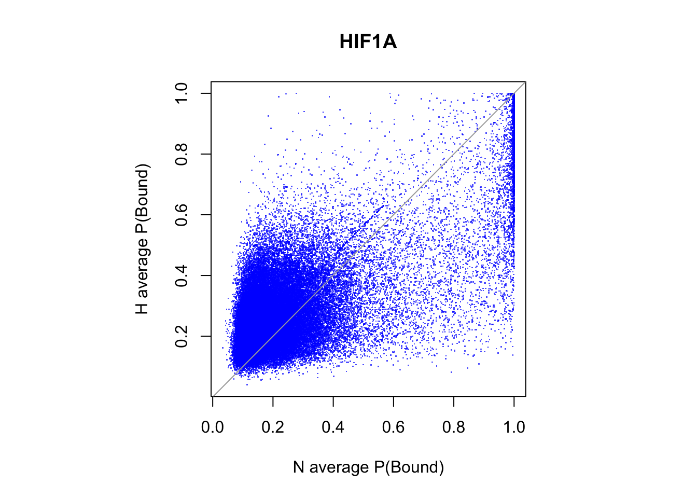
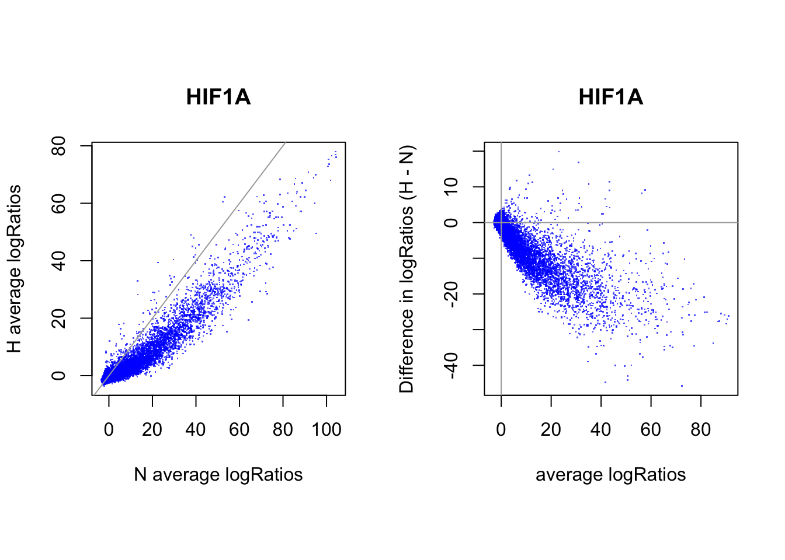
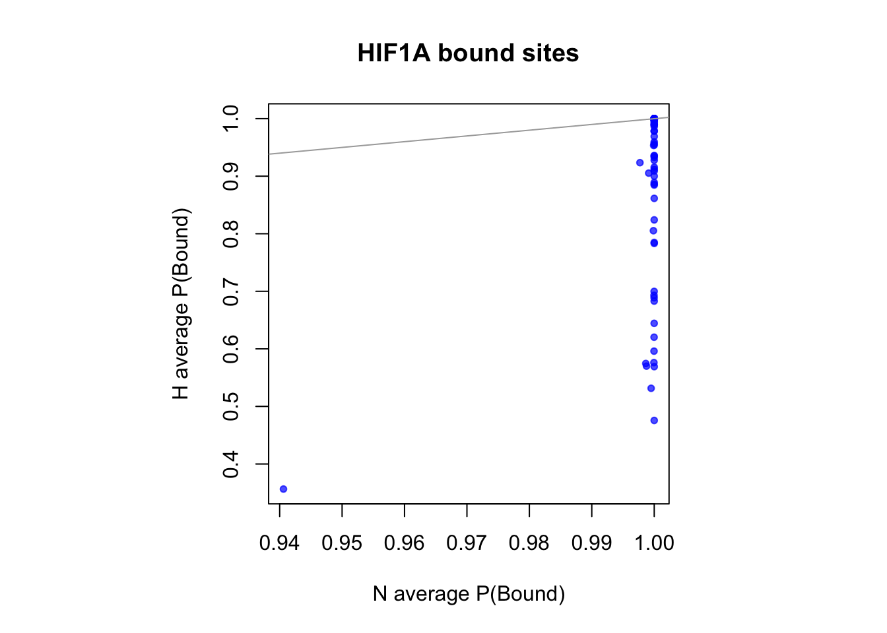
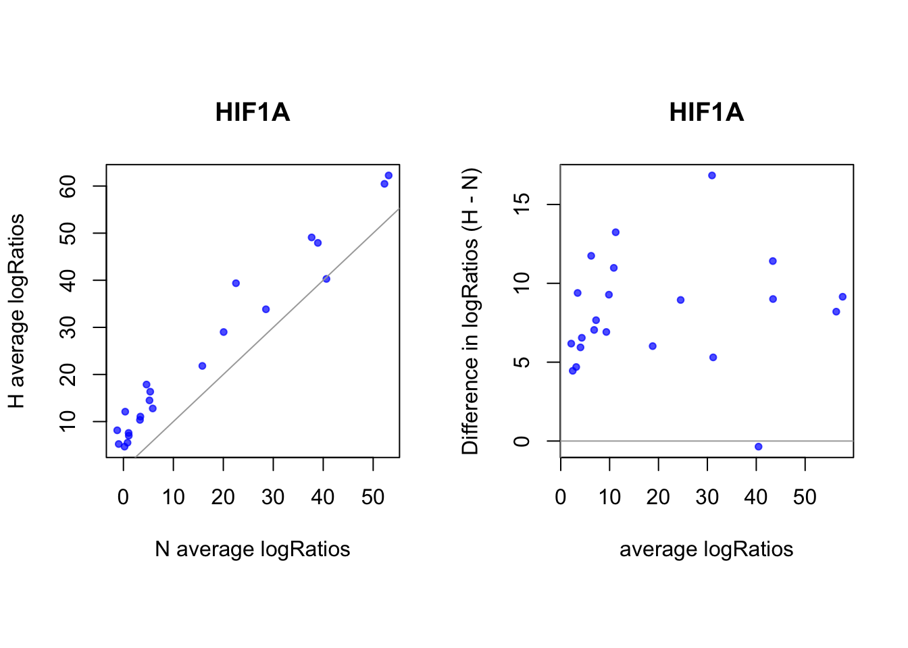

Compare CENTIPEDE predictions for CTCF for regions that differentially open between hypoxia vs. normoxia
Kaixuan Luo
7/25/2018
Last updated: 2018-07-25
workflowr checks: (Click a bullet for more information)-
✔ R Markdown file: up-to-date
Great! Since the R Markdown file has been committed to the Git repository, you know the exact version of the code that produced these results.
-
✔ Environment: empty
Great job! The global environment was empty. Objects defined in the global environment can affect the analysis in your R Markdown file in unknown ways. For reproduciblity it’s best to always run the code in an empty environment.
-
✔ Seed:
set.seed(20180613)The command
set.seed(20180613)was run prior to running the code in the R Markdown file. Setting a seed ensures that any results that rely on randomness, e.g. subsampling or permutations, are reproducible. -
✔ Session information: recorded
Great job! Recording the operating system, R version, and package versions is critical for reproducibility.
-
Great! You are using Git for version control. Tracking code development and connecting the code version to the results is critical for reproducibility. The version displayed above was the version of the Git repository at the time these results were generated.✔ Repository version: cbd5c0b
Note that you need to be careful to ensure that all relevant files for the analysis have been committed to Git prior to generating the results (you can usewflow_publishorwflow_git_commit). workflowr only checks the R Markdown file, but you know if there are other scripts or data files that it depends on. Below is the status of the Git repository when the results were generated:
Note that any generated files, e.g. HTML, png, CSS, etc., are not included in this status report because it is ok for generated content to have uncommitted changes.Ignored files: Ignored: .DS_Store Ignored: .Rhistory Ignored: .Rproj.user/ Ignored: code_RCC/.DS_Store Ignored: data/.DS_Store Untracked files: Untracked: analysis/compare_centipede_predictions_DiffACregions_CTCF.Rmd Untracked: data/motifs/ Untracked: data/wgEncodeMapability/ Untracked: docs/figure/compare_centipede_predictions.Rmd/ Untracked: docs/figure/compare_centipede_predictions_DiffACregions_CTCF.Rmd/ Untracked: workflow_setup.R Unstaged changes: Modified: analysis/ATACseq_preprocessing_pipeline.Rmd Modified: analysis/compare_centipede_predictions_HIF1A.Rmd Modified: analysis/index.Rmd Modified: code_RCC/fitCentipede_ATAC-seq_counts.R
Expand here to see past versions:
| File | Version | Author | Date | Message |
|---|---|---|---|---|
| Rmd | cbd5c0b | kevinlkx | 2018-07-25 | compare centipede predictions for HIF1A in DiffAC regions |
library(ggplot2)
library(grid)
library(gridExtra)
suppressPackageStartupMessages(library(GenomicRanges))
library(limma)
Attaching package: 'limma'The following object is masked from 'package:BiocGenerics':
plotMAlibrary(edgeR)
library(VennDiagram)Loading required package: futile.loggermessage <- futile.logger::flog.threshold(futile.logger::ERROR, name = "VennDiagramLogger")
## venn diagram
plot_venn_overlaps <- function(overlaps.m, title = "", col_fill = NULL, category.names = NULL){
grid.newpage()
overlaps_venn.l <- lapply(as.data.frame(overlaps.m), function(x) which(x == 1))
if(is.null(col_fill)){
col_fill <- 1:length(overlaps_venn.l)
}
if(is.null(category.names)){
category.names <- names(x)
}
venn.plot <- venn.diagram(
x = overlaps_venn.l,
category.names = category.names,
filename = NULL,
fill = col_fill,
alpha=rep(0.5, length(overlaps_venn.l)),
cex = 1.5,
cat.fontface=4,
main=title)
grid.draw(venn.plot)
}parameters
tf_name <- "HIF1A"
pwm_name <- "HIF1A_MA1106.1_1e-4"
thresh_PostPr_bound <- 0.99
cat(pwm_name, "\n")HIF1A_MA1106.1_1e-4 flank <- 100load diff accessibility test results, comparing hypoxia vs. normoxia.
- log fold change > 0 indicates differentially open in hypoxia.
- log fold change < 0 indicates differentially open in normoxia.
diffAC_regions.df <- read.csv("~/Dropbox/research/ATAC_DNase/ATAC-seq_Olivia_Gray/results/DiffAC_regions/ordered_results_withcoords.csv")
cat(nrow(diffAC_regions.df), "regions in total \n")138927 regions in total diffAC_regions.df <- diffAC_regions.df[, c("chr", "Start", "End","GeneID", "baseMean", "Strand", "log2FoldChange", "lfcSE", "stat", "pvalue", "padj")]
diffAC_sig_regions.df <- diffAC_regions.df[diffAC_regions.df$padj < 0.1, ]
cat(nrow(diffAC_sig_regions.df), "significant regions \n")2390 significant regions hist(diffAC_regions.df$log2FoldChange, xlab = "log2FoldChange", main = "Differentially open regions (FDR < 10%)")
diffAC_sigH_regions.df <- diffAC_sig_regions.df[diffAC_sig_regions.df$log2FoldChange > 0, ]
cat(nrow(diffAC_sigH_regions.df), "regions differentially open in hypoxia. \n")201 regions differentially open in hypoxia. diffAC_sigN_regions.df <- diffAC_sig_regions.df[diffAC_sig_regions.df$log2FoldChange < 0, ]
cat(nrow(diffAC_sigN_regions.df), "regions differentially open in normoxia. \n")2189 regions differentially open in normoxia. diffAC_sig_regions.gr <- makeGRangesFromDataFrame(diffAC_sig_regions.df, start.field = "Start", end.field = "End", keep.extra.columns = T)
diffAC_sigH_regions.gr <- makeGRangesFromDataFrame(diffAC_sigH_regions.df, start.field = "Start", end.field = "End", keep.extra.columns = T)
diffAC_sigN_regions.gr <- makeGRangesFromDataFrame(diffAC_sigN_regions.df, start.field = "Start", end.field = "End", keep.extra.columns = T)load CENTIPEDE predictions
dir_predictions <- paste0("~/Dropbox/research/ATAC_DNase/ATAC-seq_Olivia_Gray/results/centipede_predictions/", pwm_name)
## condition: N
bam_namelist_N <- c("N1_nomito_rdup.bam", "N2_nomito_rdup.bam", "N3_nomito_rdup.bam")
site_predictions_N.l <- vector("list", 3)
names(site_predictions_N.l) <- bam_namelist_N
for(i in 1:length(bam_namelist_N)){
bam_basename <- tools::file_path_sans_ext(basename(bam_namelist_N[[i]]))
site_predictions_N.l[[i]] <- read.table(paste0(dir_predictions, "/", pwm_name, "_", bam_basename, "_predictions.txt"), header = T, stringsAsFactors = F)
}
CentPostPr_N.df <- data.frame(N1 = site_predictions_N.l[[1]]$CentPostPr,
N2 = site_predictions_N.l[[2]]$CentPostPr,
N3 = site_predictions_N.l[[3]]$CentPostPr)
CentLogRatios_N.df <- data.frame(N1 = site_predictions_N.l[[1]]$CentLogRatios,
N2 = site_predictions_N.l[[2]]$CentLogRatios,
N3 = site_predictions_N.l[[3]]$CentLogRatios)
## condition: H
bam_namelist_H <- c("H1_nomito_rdup.bam", "H2_nomito_rdup.bam", "H3_nomito_rdup.bam")
site_predictions_H.l <- vector("list", 3)
names(site_predictions_H.l) <- bam_namelist_H
for(i in 1:length(bam_namelist_H)){
bam_basename <- tools::file_path_sans_ext(basename(bam_namelist_H[[i]]))
site_predictions_H.l[[i]] <- read.table(paste0(dir_predictions, "/", pwm_name, "_", bam_basename, "_predictions.txt"), header = T, stringsAsFactors = F)
}
CentPostPr_H.df <- data.frame(H1 = site_predictions_H.l[[1]]$CentPostPr,
H2 = site_predictions_H.l[[2]]$CentPostPr,
H3 = site_predictions_H.l[[3]]$CentPostPr)
CentLogRatios_H.df <- data.frame(H1 = site_predictions_H.l[[1]]$CentLogRatios,
H2 = site_predictions_H.l[[2]]$CentLogRatios,
H3 = site_predictions_H.l[[3]]$CentLogRatios)
if(any(site_predictions_N.l[[1]]$name != site_predictions_H.l[[1]]$name)){
stop("sites not match!")
}
sites.df <- site_predictions_N.l[[1]][,1:7]
## get motif coordinates
if(sites.df[1, "end"] - sites.df[1, "start"] > flank){
sites.df$start <- sites.df$start + flank
sites.df$end <- sites.df$end - flank
}
sites.gr <- makeGRangesFromDataFrame(sites.df, start.field = "start", end.field = "end", keep.extra.columns = F)
CentPostPr.df <- cbind(CentPostPr_N.df, CentPostPr_H.df)
CentLogRatios.df <- cbind(CentLogRatios_N.df, CentLogRatios_H.df)
sites_CentPostPr.df <- cbind(sites.df, CentPostPr_N.df, CentPostPr_H.df)
sites_CentLogRatios.df <- cbind(sites.df, CentLogRatios_N.df, CentLogRatios_H.df)intersect CENTIPEDE sites with diffAC regions
overlaps_diffAC.df <- as.data.frame(findOverlaps(query = sites.gr, subject = diffAC_sig_regions.gr, type = "within", ignore.strand = T))
idx_sites_diffAC <- unique(overlaps_diffAC.df$queryHits)
cat(length(idx_sites_diffAC), "candidate motif sites differentially open in hypoxia or normoxia. \n")101 candidate motif sites differentially open in hypoxia or normoxia. overlaps_sigH.df <- as.data.frame(findOverlaps(query = sites.gr, subject = diffAC_sigH_regions.gr, type = "within", ignore.strand = T))
idx_sites_sigH <- unique(overlaps_sigH.df$queryHits)
cat(length(idx_sites_sigH), "candidate motif sites differentially open in hypoxia. \n")22 candidate motif sites differentially open in hypoxia. overlaps_sigN.df <- as.data.frame(findOverlaps(query = sites.gr, subject = diffAC_sigN_regions.gr, type = "within", ignore.strand = T))
idx_sites_sigN <- unique(overlaps_sigN.df$queryHits)
cat(length(idx_sites_sigN), "candidate motif sites differentially open in normoxia. \n")79 candidate motif sites differentially open in normoxia. binarize to bound and unbound
cat("Number of bound sites that are differentially open in hypoxia: \n")Number of bound sites that are differentially open in hypoxia: colSums(CentPostPr.df[idx_sites_sigH, ] > thresh_PostPr_bound)N1 N2 N3 H1 H2 H3
14 12 9 21 18 22 cat("Number of bound sites that are differentially open in normoxia: \n")Number of bound sites that are differentially open in normoxia: colSums(CentPostPr.df[idx_sites_sigN, ] > thresh_PostPr_bound)N1 N2 N3 H1 H2 H3
79 79 78 45 36 53 Average binding probablity and average logRatios
all motif sites
# binding probablity
par(pty="s")
plot(rowMeans(CentPostPr_N.df), rowMeans(CentPostPr_H.df),
xlab = "N average P(Bound)", ylab = "H average P(Bound)", main = tf_name,
pch = ".", col = rgb(0,0,1,0.7))
abline(a=0, b=1, col = "darkgray")
# logRatios
par(mfrow = c(1,2))
par(pty="s")
plot(rowMeans(CentLogRatios_N.df), rowMeans(CentLogRatios_H.df),
xlab = "N average logRatios", ylab = "H average logRatios", main = tf_name,
pch = ".", col = rgb(0,0,1,0.7))
abline(a=0,b=1,col = "darkgray")
plot(x = (rowMeans(CentLogRatios_H.df)+rowMeans(CentLogRatios_N.df))/2,
y = rowMeans(CentLogRatios_H.df) - rowMeans(CentLogRatios_N.df),
xlab = "average logRatios", ylab = "Difference in logRatios (H - N)", main = tf_name,
pch = ".", col = rgb(0,0,1,0.7))
abline(v=0, h=0, col = "darkgray")
sites that are differentially open in hypoxia
cat(length(idx_sites_sigH), "candidate motif sites differentially open in hypoxia. \n")22 candidate motif sites differentially open in hypoxia. # binding probablity
par(pty="s")
plot(rowMeans(CentPostPr_N.df[idx_sites_sigH,]), rowMeans(CentPostPr_H.df[idx_sites_sigH,]),
xlab = "N average P(Bound)", ylab = "H average P(Bound)", main = paste(tf_name, "bound sites"),
pch = 20, col = rgb(0,0,1,0.7))
abline(a=0, b=1, col = "darkgray")
# logRatios
par(mfrow = c(1,2))
par(pty="s")
plot(rowMeans(CentLogRatios_N.df[idx_sites_sigH,]), rowMeans(CentLogRatios_H.df[idx_sites_sigH,]),
xlab = "N average logRatios", ylab = "H average logRatios", main = tf_name,
pch = 20, col = rgb(0,0,1,0.7))
abline(a=0,b=1,col = "darkgray")
plot(x = (rowMeans(CentLogRatios_H.df[idx_sites_sigH,])+rowMeans(CentLogRatios_N.df[idx_sites_sigH,]))/2,
y = rowMeans(CentLogRatios_H.df[idx_sites_sigH,]) - rowMeans(CentLogRatios_N.df[idx_sites_sigH,]),
xlab = "average logRatios", ylab = "Difference in logRatios (H - N)", main = tf_name,
pch = 20, col = rgb(0,0,1,0.7))
abline(v=0, h=0, col = "darkgray")
sites that are differentially open in normoxia
cat(length(idx_sites_sigN), "candidate motif sites differentially open in normoxia \n")79 candidate motif sites differentially open in normoxia # binding probablity
par(pty="s")
plot(rowMeans(CentPostPr_N.df[idx_sites_sigN,]), rowMeans(CentPostPr_H.df[idx_sites_sigN,]),
xlab = "N average P(Bound)", ylab = "H average P(Bound)", main = paste(tf_name, "bound sites"),
pch = 20, col = rgb(0,0,1,0.7))
abline(a=0, b=1, col = "darkgray")
# logRatios
par(mfrow = c(1,2))
par(pty="s")
plot(rowMeans(CentLogRatios_N.df[idx_sites_sigN,]), rowMeans(CentLogRatios_H.df[idx_sites_sigN,]),
xlab = "N average logRatios", ylab = "H average logRatios", main = tf_name,
pch = 20, col = rgb(0,0,1,0.7))
abline(a=0,b=1,col = "darkgray")
plot(x = (rowMeans(CentLogRatios_H.df[idx_sites_sigN,])+rowMeans(CentLogRatios_N.df[idx_sites_sigN,]))/2,
y = rowMeans(CentLogRatios_H.df[idx_sites_sigN,]) - rowMeans(CentLogRatios_N.df[idx_sites_sigN,]),
xlab = "average logRatios", ylab = "Difference in logRatios (H - N)", main = tf_name,
pch = 20, col = rgb(0,0,1,0.7))
abline(v=0, h=0, col = "darkgray")
Compare logRatios for differentially accessible sites using limma
targets <- data.frame(bam = c(bam_namelist_N, bam_namelist_H),
label = colnames(CentLogRatios.df),
condition = rep(c("N", "H"), each = 3))
print(targets) bam label condition
1 N1_nomito_rdup.bam N1 N
2 N2_nomito_rdup.bam N2 N
3 N3_nomito_rdup.bam N3 N
4 H1_nomito_rdup.bam H1 H
5 H2_nomito_rdup.bam H2 H
6 H3_nomito_rdup.bam H3 Hcondition <- factor(targets$condition, levels = c("N", "H"))
design <- model.matrix(~0+condition)
colnames(design) <- levels(condition)
print(design) N H
1 1 0
2 1 0
3 1 0
4 0 1
5 0 1
6 0 1
attr(,"assign")
[1] 1 1
attr(,"contrasts")
attr(,"contrasts")$condition
[1] "contr.treatment"CentLogRatios_diffAC.df <- CentLogRatios.df[idx_sites_diffAC, ]
fit <- lmFit(CentLogRatios_diffAC.df, design)
contrasts <- makeContrasts(H-N, levels=design)
fit2 <- contrasts.fit(fit, contrasts)
fit2 <- eBayes(fit2, trend=TRUE)
num_diffbind <- summary(decideTests(fit2))
percent_diffbind <- round(num_diffbind / sum(num_diffbind) * 100, 2)
cat(num_diffbind[1], "sites differentially open in normoxia (", percent_diffbind[1], "%) \n",
num_diffbind[3], "sites differentially open in hypoxia (", percent_diffbind[3], "%) \n",
num_diffbind[2], "sites not significantly different (", percent_diffbind[2], "%) \n")79 sites differentially open in normoxia ( 78.22 %)
14 sites differentially open in hypoxia ( 13.86 %)
8 sites not significantly different ( 7.92 %) # volcanoplot(fit2, main="H vs. N", xlab = "Difference in logRatios (H - N)")
plot(x = fit2$coef, y = -log10(fit2$p.value),
xlab = "Difference in logRatios (H - N)", ylab = "-log10(P-value)", main= paste(tf_name, "H vs. N"),
pch = 16, cex = 0.35)
Session information
sessionInfo()R version 3.3.3 (2017-03-06)
Platform: x86_64-apple-darwin13.4.0 (64-bit)
Running under: macOS 10.13.4
locale:
[1] en_US.UTF-8/en_US.UTF-8/en_US.UTF-8/C/en_US.UTF-8/en_US.UTF-8
attached base packages:
[1] stats4 parallel grid stats graphics grDevices utils
[8] datasets methods base
other attached packages:
[1] VennDiagram_1.6.17 futile.logger_1.4.3 edgeR_3.14.0
[4] limma_3.28.21 GenomicRanges_1.24.3 GenomeInfoDb_1.8.7
[7] IRanges_2.6.1 S4Vectors_0.10.3 BiocGenerics_0.18.0
[10] gridExtra_2.3 ggplot2_2.2.1
loaded via a namespace (and not attached):
[1] Rcpp_0.12.14 pillar_1.1.0 git2r_0.21.0
[4] plyr_1.8.4 workflowr_1.0.1 XVector_0.12.1
[7] futile.options_1.0.0 R.methodsS3_1.7.1 R.utils_2.6.0
[10] tools_3.3.3 zlibbioc_1.18.0 digest_0.6.13
[13] evaluate_0.10.1 tibble_1.4.1 gtable_0.2.0
[16] rlang_0.1.6 yaml_2.1.16 stringr_1.2.0
[19] knitr_1.18 rprojroot_1.3-2 rmarkdown_1.9
[22] lambda.r_1.1.9 magrittr_1.5 whisker_0.3-2
[25] splines_3.3.3 backports_1.1.2 scales_0.4.1
[28] htmltools_0.3.6 colorspace_1.3-2 stringi_1.1.5
[31] lazyeval_0.2.1 munsell_0.4.3 R.oo_1.21.0 This reproducible R Markdown analysis was created with workflowr 1.0.1